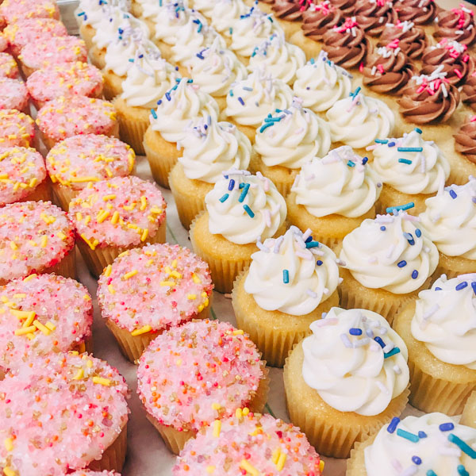

Reintroducing ~Sweet Wednesdays~ at New Relic!
featuring cupcakes from St. Cupcake
Starting 6/7 and every Wednesday after, the Rew Team will be setting up sweets on floors 21 and 27, including some vegan and gluten free options. Take a look at the list of items we have today!

- Vanilla with cream cheese icing
- Chocolate with cream cheese icing
- Vanilla with chocolate buttercream
- Vanilla with hot fudge
- Toasted coconut cream
- The Salty Captain
- Red velvet
- Vegan red velvet
- Vegan Chocolate and Vanilla